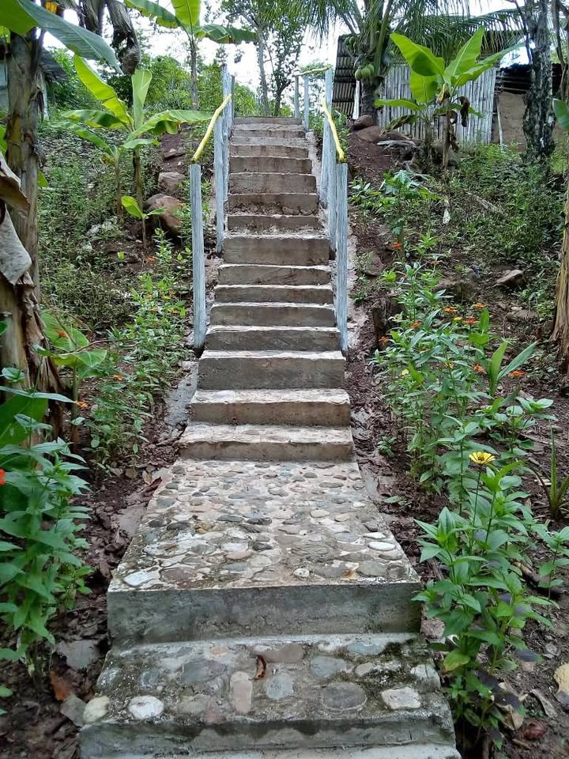

Precio desconocido 760 m²

🌿 ¡Oportunidad de Inversión! Hermoso Terreno de 1,760 m² en Pinto Recodo – San Martín, con Acceso al Río Se vende amplio terreno ideal para quienes buscan invertir, construir una casa de campo, desarrollar un proyecto turístico o realizar actividades agrolas. Características: - ✅ Área: 1,760 m². - ✅ Acceso directo al río Chumbaquihui. - ✅️ A 45min aprox desde la ciudad de Tarapoto. - ✅ Tierra fértil con producción de árboles frutales. - ✅ Zona tranquila, rodeada de naturaleza y con gran potencial de valorización. - ✅ Documentación totalmente en regla. - ✅ Título de propiedad inscrito en SUNAR